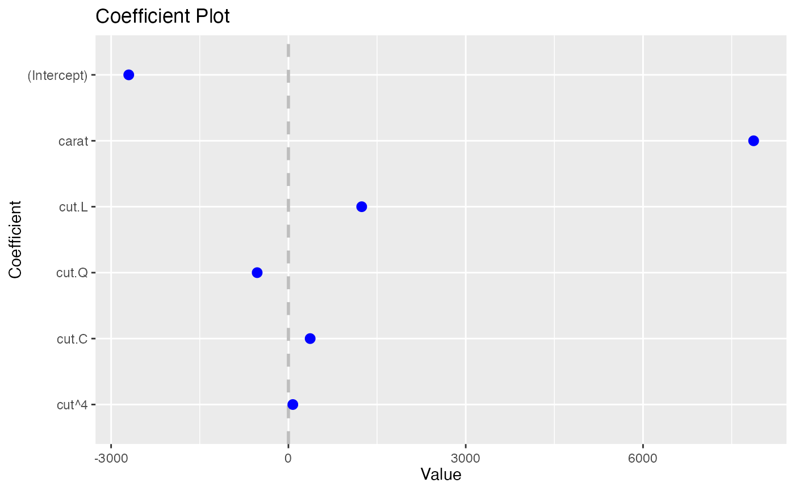

Coefplot plotting
buildPlotting.default.RdBuild ggplot object for coefplot
Usage
buildPlotting.default(
modelCI,
title = "Coefficient Plot",
xlab = "Value",
ylab = "Coefficient",
lwdInner = 1 + interactive * 2,
lwdOuter = if (interactive) 1 else unname((Sys.info()["sysname"] != "Windows") * 0.5),
pointSize = 3 + interactive * 5,
color = "blue",
cex = 0.8,
textAngle = 0,
numberAngle = 0,
shape = 16,
innerType = 1,
outerType = 1,
outerCI = 2,
innerCI = 1,
multi = FALSE,
zeroColor = "grey",
zeroLWD = 1,
zeroType = 2,
numeric = FALSE,
fillColor = "grey",
alpha = 1/2,
horizontal = FALSE,
facet = FALSE,
scales = "free",
value = "Value",
coefficient = "Coefficient",
errorHeight = 0,
dodgeHeight = 1,
interactive = FALSE,
linetype = 1
)Arguments
- modelCI
An object created by
buildModelCI- title
The name of the plot, if NULL then no name is given
- xlab
The x label
- ylab
The y label
- lwdInner
The thickness of the inner confidence interval
- lwdOuter
The thickness of the outer confidence interval
- pointSize
Size of coefficient point
- color
The color of the points and lines
- cex
The text size multiplier, currently not used
- textAngle
The angle for the coefficient labels, 0 is horizontal
- numberAngle
The angle for the value labels, 0 is horizontal
- shape
The shape of the points
- outerCI
How wide the outer confidence interval should be, normally 2 standard deviations. If 0, then there will be no outer confidence interval.
- innerCI
How wide the inner confidence interval should be, normally 1 standard deviation. If 0, then there will be no inner confidence interval.
- multi
logical; If this is for
multiplotthen leave the colors as determined by the legend, if FALSE then make all colors the same- zeroColor
The color of the line indicating 0
- zeroLWD
The thickness of the 0 line
- zeroType
The type of 0 line, 0 will mean no line
- numeric
logical; If true and factors has exactly one value, then it is displayed in a horizontal graph with continuous confidence bounds.
- fillColor
The color of the confidence bounds for a numeric factor
- alpha
The transparency level of the numeric factor's confidence bound
- horizontal
logical; If the plot should be displayed horizontally
- facet
logical; If the coefficients should be faceted by the variables, numeric coefficients (including the intercept) will be one facet
- scales
The way the axes should be treated in a faceted plot. Can be c("fixed", "free", "free_x", "free_y")
- value
Name of variable for value metric
- coefficient
Name of variable for coefficient names
- errorHeight
Height of error bars
- dodgeHeight
Amount of vertical dodging
- interactive
If
TRUEan interactive plot is generated instead of[ggplot2]- linetype
The linetype of the error bars
Details
This function builds up the ggplot layer by layer for coefplot.lm
Examples
data(diamonds)
model1 <- lm(price ~ carat + cut, data=diamonds)
theCI <- coefplot:::buildModelCI(model1)
coefplot:::buildPlotting.default(theCI)

coefplot(model1)